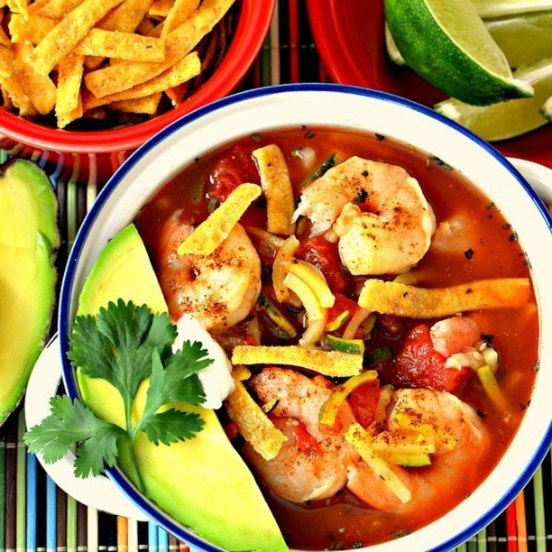

The Hottest Restaurants in Seattle, October 2018
Miri’s at Golden Gardens

Miri’s at Golden Gardens
It might not become a rainy-day staple, but Miri’s, a seasonal snack stand from farmers’ market favorite Miri Plowman, is perfect for glorious beach days at Golden Gardens. Warm kebab sandwiches, picnic platters, acai bowls, and buttery poffertjes (mini Dutch pancakes) share menu space with slushies, cold brew coffee, and iced tea for anyone who prefers not to pack their own picnic.
Magnuson Cafe and Brewery
With its prime location — a well-preserved former munitions building with a massive patio overlooking the water in underserved Magnuson Park — this brewpub sibling to SLU’s Dexter Brewhouse and Mollusk Brewing could have phoned it in, but instead the selection of classic pub grub is finely tuned, from the succulent smoked and fried wings to the seasonal salads stuffed with kale, strawberries, and chevre. And underappreciated Mollusk has no learning curve, so the draft list is on point, crisp pilsners and out-there inventions alike — including Brunch Beer, an oddly successful boozy Orange Julius.